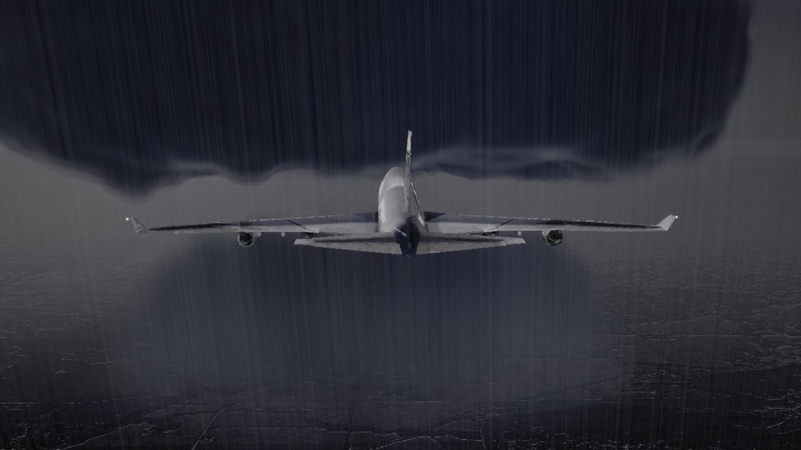
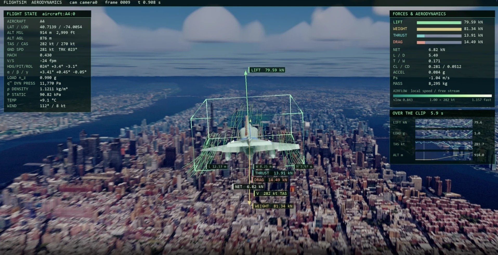

Dear Professor Backus and Dr. Bhattacharya,
I am pleased to submit the final deliverable for the FlightSim project. This email contains the
link to the source repository, the updated startup guide, a set of preview frames rendered by the
system, and examples of the per-frame analysis pictures and JSON data it now produces.
FlightSim is a research-grade flight simulation and synthetic-data system. A user types a plain-
English description of a flight (for example, "Cinematic: an A-4E Skyhawk banking low over the
Grand Canyon at 9,000 feet at golden hour, chase view"). The system turns that request into a
validated, reproducible scenario, flies it with the JSBSim flight-dynamics model, and renders it
in Unreal Engine 5.7 over real-world terrain (Cesium / Google 3D tiles). Each run produces image
frames or a video clip together with an annotated dataset (COCO, KITTI, YOLO, VOC and WebDataset
formats), packaged as a downloadable dataset.zip with a dataset card.
Key capabilities delivered:
• Natural-language prompt to validated scenario, with an AI auto-fix for vague or invalid prompts
• Physics from JSBSim, including weather, turbulence, wind, icing and failure scenarios
• Real-world terrain and cities (Grand Canyon, Yosemite, the Alps, New York, San Francisco, and more)
• Weather and lighting: time of day, clouds, rain, thunderstorms and tornadoes
• Multiple aircraft (J-11A, A-4E Skyhawk, Airbus A320, Boeing 747, Cessna 172) and camera views
(chase, cockpit, tower)
• A one-command Windows launcher and a browser-based web app — no command line needed in normal use
• A labelled-dataset pipeline with automatic verification of every run
• Per-frame 2-D and 3-D bounding boxes, with analysis pictures (forces, airflow, flight state,
terrain and environment), JSON data for every frame, a physics.csv per clip, overlay videos and
an interactive 3-D viewer




1. Source repository (deliverable branch: phase-3-completed)
https://github.com/DhruvaValluru/flightsim/tree/phase-3-completed
Clone command:
git clone --depth 1 -b phase-3-completed https://github.com/DhruvaValluru/flightsim.git
Note: the repository is private. Please reply with your GitHub usernames and I will add
you as collaborators so the link opens for you.
2. Startup Guide (attached, PDF)
A step-by-step guide for a Windows computer: the exact software versions to install, the
one-command first start, pre-downloading terrain and scenes, getting updates, using the web
app, six ready-to-use cinematic prompts, and a troubleshooting table. A new Part 9 explains
where to find and download each run's frames, analysis pictures, JSON files and overlay
videos, and what each file contains.
3. Preview frames (attached)
Six frames rendered by the system on the Windows test machine:
1. J-11A over the Matterhorn at golden hour (chase view, real terrain)
2. J-11A on a low pass over the desert (Grand Canyon preset)
3. Airbus A320 over New York City (Google 3D city tiles)
4. A-4E Skyhawk over the Alps
5. Boeing 747 flying through a thunderstorm
6. Cessna 172 near a tornado
4. Analysis frames and JSON data (attached)
For every frame of a run, the system draws three 3-D analysis pictures from the flight model's
state at that instant:
• Plain: each aircraft's 3-D bounding box, with its ID, size and range
• Detailed: the box plus lift, weight, thrust, drag and net-force vectors, the airflow
around the airframe, and Flight State and Forces & Aerodynamics panels (on a clip, also
graphs of lift, load factor, airspeed and altitude over the clip)
• Scene: height contours, a ground grid, range rings, the drop line, the flight path, the
horizon, a pitch ladder, a heading tape and an Environment panel
The attached sheet shows all three for an A-4E Skyhawk over Manhattan, plus the Detailed
picture for a clip over the Hudson River and for a Cessna 172 over New York.
Each picture is backed by machine-readable files, all downloadable from the run's Frames page:
• frame_NNNN.json: the camera pose and lens, every flight-recorder channel at that moment,
and the ground-truth labels (2-D and 3-D boxes, truncation, keypoints, horizon)
• frame_NNNN_box3d.json: the 3-D box with a rebuild check, every force as a vector, the
force balance, velocity, angles, air data and aerodynamic coefficients, and every point
each picture draws, in metres and pixels (one sample is attached)
• physics.csv: one row per frame across the clip, with units
• manifest.json: the camera, all of its frames, landmarks and the object and class tables
The same pictures are also available as overlay videos and in the interactive 3-D viewer.
After installing the prerequisites listed in Part 1 of the guide, the full system starts with
a single command in PowerShell:
cd $HOME\flightsim
& ".\Launch FlightSim.cmd"
The web app then opens at http://127.0.0.1:8008/. The first start takes 30–90 minutes while it
builds and downloads everything; later starts take a minute or two.
Thank you both for your guidance and support throughout this project. I would be glad to give a
live demonstration or answer any questions at your convenience.
Best regards,
Dhruva Valluru
FlightSim Project